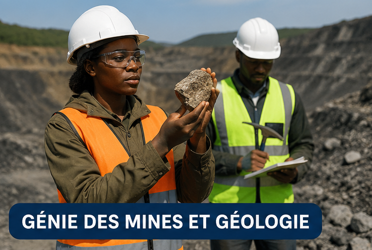

Génie Informatique
Formation axée sur le développement logiciel, les réseaux et les bases de données. Prépare les étudiants aux métiers du numérique.
Informatique
Formation axée sur le développement logiciel, les réseaux et les bases de données. Prépare les étudiants aux métiers du numérique.
InformatiqueÉtude et conception des infrastructures (bâtiments, routes, ponts). Met l’accent sur la résistance des matériaux et la gestion de chantier.
ConstructionOptimisation des systèmes de production, qualité et logistique. Idéal pour ceux qui veulent améliorer l’efficacité des entreprises.
Production
Exploration, exploitation et gestion des ressources minières avec une approche responsable et durable.
MinesÉtude de la structure de la Terre, des roches et des ressources naturelles. Approche scientifique du sous-sol.
Géosciences